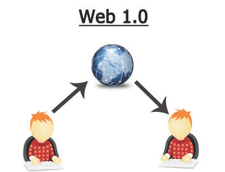

WEB 1.0
Desenvolvida aproximadamente em 1991, a web 1.0 é conhecida
como a “web de leitura” (read-only web) e foi marcada pela
publicação de páginas estáticas, onde uma minoria de produtores
de conteúdo publicava informação em HTML simples, muitas vezes
sem atualizações dinâmicas e com pouca interatividade. Os sites
funcionavam como catálogos online e gerando presença digital
institucional ou comercial e fornecendo acesso unidirecional a
informação. Nesse contexto, tecnologias como HTTP, HTML, URL, CSS em
sua forma básica. As interações eram limitadas a e-mails e
fóruns sem integração dinâmica, e não havia mecanismos
automatizados de atualização de conteúdo, exigindo
recarregamento manual dos usuários . Livros fundadores, como
Waving the Web de Tim Berners-Lee (1999), exploram essa
primeira estrutura como base da Web. Além disso, a Web 1.0
fomentou a consolidação da sociedade da informação, conforme
discutido porManuel
Castells em sua trilogia The Information Age,
organizada em torno de redes de fluxo e informação. Essa fase
abriu caminho para a evolução de plataformas mais participativas.

|Início|
Web 2.0|
Web 3.0|
Web 4.0|